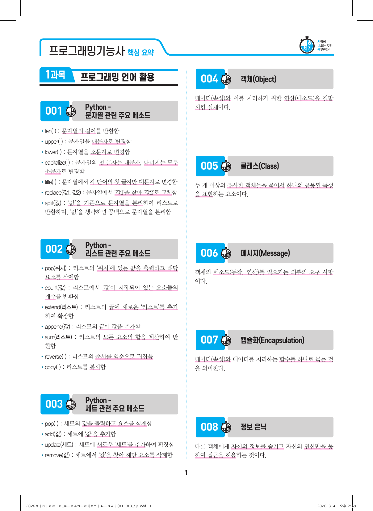

2026 핵심요약 + 2027 최종점검
학습 대시보드
PROGRAMMING TECHNICIAN · STUDY SYSTEM
읽고, 풀고, 틀린 것만 다시.
핵심요약 원문 30페이지와 최종점검 5회 300문항을 그대로 학습하고, 핵심요약 범위에서 만든 추가 60문항으로 복습할 수 있습니다.
0%학습 진행
STUDY
핵심 요약 진도
TEST
모의고사 기록
REVIEW
오답 현황

SOURCE EXAM
원본 60문항